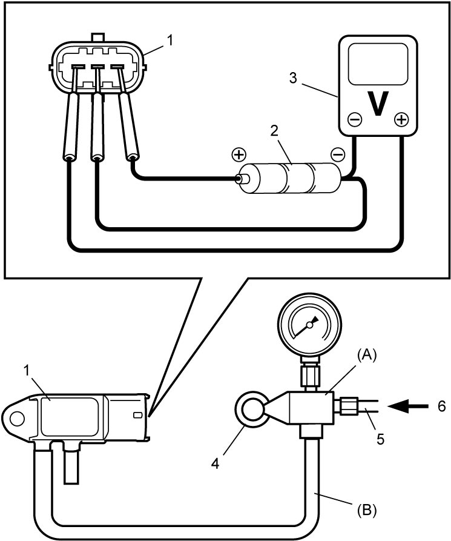
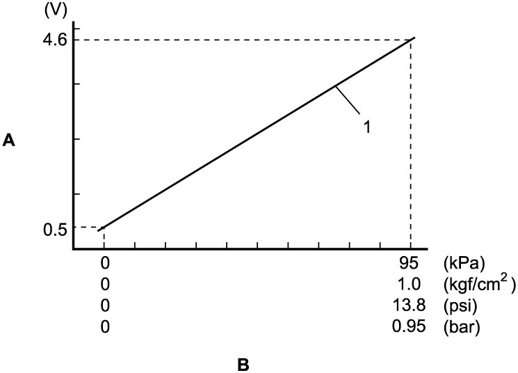

1B
| DPF® Differential Pressure Sensor Inspection |
NOTICE:
If excessive pressure is applied, the DPF® differential pressure sensor may be damaged.
Do not exceed a pressure of 100 kPa (1.0 kgf/cm2, 14.5 psi, 1.0 bar).
Measure output voltage of DPF® differential pressure sensor as follows.
1)Arrange 3 new 1.5 V batteries (2) in series, and check that total voltage is 4.5 to 5.0 V.
2)Connect voltmeter (3) and batteries to DPF® differential pressure sensor (1) as shown in figure.
3)Set special tool as follows.
a)Loosen adjusting screw (4) fully.
b)Connect air hose (5) to special tool.
c)Connect special tool (A) to DPF® differential pressure sensor (1) using hose (B).


 "Expand image")
| 6. | Compressed air |
4)Check that output voltage varies as shown in the following graph when pressure applied to sensor is increased up to 95 kPa (1.0 kgf/cm2, 13.8 psi, 0.95 bar) from 0 kPa (0 kgf/cm2, 0 psi, 0 bar) using special tool and compressed air.
If faulty condition is found, replace DPF® differential pressure sensor.
If faulty condition is found, replace DPF® differential pressure sensor.

 "Expand image")
| A: | Voltage | 1. | Reference line |
| B: | Pressure |